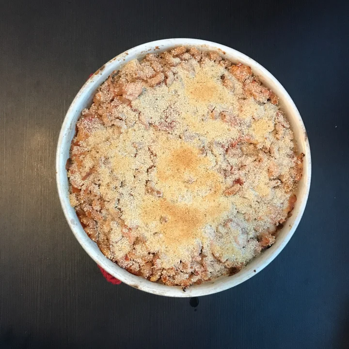

Back to index
Chicken pasta Casserole

Description
Easy to throw together and transport for the working fellow. High in protein!
Ingredients
- 16oz (450g) macaroni (elbow, penne)
- 24oz (700g) raw chicken breast, diced
- 9oz (250g) mozzarella cheese, shredded
- 1.5oz (40g) parmesan cheese, grated
- 1.5oz (40g) bread crumbs
- 16oz (450g) diced tomatoes
- Some oil and butter
- (Optional) More mozzarella and parmesan for fans of cheese.
Steps
- Preheat oven to 400F/200C.
- Dice chicken and pan cook with oil until fully cooked.
- Cook the pasta for a few minutes less than usual (about 7-8 minutes).
- Add chicken and pasta into a casserole dish. Mix together. Add diced tomato and shredded mozzarella cheese and keep mixing. Top with parmesan cheese and bread crumbs for an even coat. Add about a spoonful of butter evenly on the top.
- Cook in the oven for 22-25 minutes, until the top looks golden.
Credits: Based Coocking